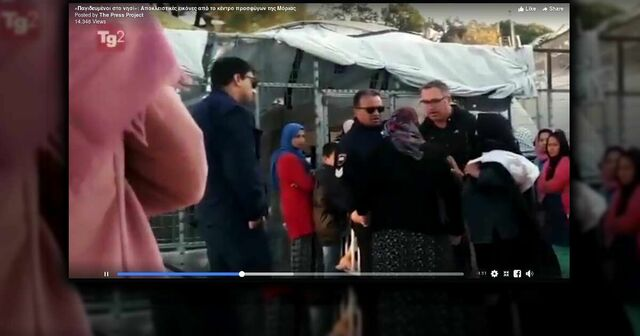

Κόπηκε το ρεπορτάζ για τη Μόρια, από τη δημόσια ιταλική τηλεόραση
21 Oct 2018, 12:50
Επίχτητος
Νε τι? Θέλατε και βιογραφικό σημείωμα? Σοβαρά τώρα?
Κόπηκε το ρεπορτάζ για τη Μόρια, από τη δημόσια ιταλική τηλεόραση

Δε μεταδόθηκε τελικά από τη δημόσια ιταλική τηλεόραση, το ρεπορτάζ για τη Μόρια, στο τρέιλερ του οποίου είδαμε χτες έναν αστυνομικό να πετάει το μπαστούνι μιας ηλικιωμένης και να τη βρίζει.
Δε μεταδόθηκε τελικά από τη δημόσια ιταλική τηλεόραση, το ρεπορτάζ για τη Μόρια, στο τρέιλερ του οποίου είδαμε χτες έναν αστυνομικό να πετάει το μπαστούνι μιας ηλικιωμένης και να τη βρίζει.
Το ρεπορτάζ που ήταν να μεταδοθεί χτες το βράδυ, τελικά δε μεταδόθηκε, ενώ ο ανταποκριτής Βαλέριο Κατάλντι, ανέφερε με ανάρτησή του στο facebook:
Το ρεπορτάζ “Παγιδευμένοι στο νησί» δεν θα μεταδοθεί απόψε, όπως αρχικά είχε ανακοινωθεί. Δεν είναι δική μου απόφαση. Πιθανώς να μεταδοθεί κάποια στιγμή τις επόμενες εβδομάδες αλλά δεν ξέρω πότε ακριβώς. Για την ώρα είμαι χαρούμενος που έχω επιτύχει ένα απόλυτο ρεκόρ. Για πρώτη φορά, μια δημοσιογραφική έρευνα που δεν έχει μεταδοθεί, έχει αποφέρει ένα σημαντικό αποτέλεσμα: Την απομάκρυνση τεσσάρων βίαιων αστυνομικών από το καμπ της Μόριας. Και άρχισαν έρευνες για να διαπιστωθεί αν πίσω από τις κινήσεις τους υπήρχε ρατσιστικό κίνητρο. Πραγματικά, ένα απίστευτο αποτέλεσμα Ευχαριστώ την Τζένη* για την αποφασιστικότητα της
Il reportage da Lesbo e da Bihac "Prigionieri sull'isola" stasera non andrà in onda come annunciato. Non è una mia…
Υπενθυμίζεται πως έχει διαταχθεί ΕΔΕ για τους αστυνομικούς που εμφανίζονται στο βίντεο, ενώ ο αστυνομικός που πετάει το μπαστούνι της ηλικιωμένης και τη βρίζει, τέθηκε σε διαθεσιμότητα. Όπως αναφέρουν πληροφορίες, η ηλικιωμένη διαμαρτυρήθηκε γιατί έφυγε με άδεια χέρια από την ουρά του φαγητού.
Το επίμαχο βίντεο, μπορείτε να το δείτε παρακάτω:
L'isola e le altre prigioni. Viaggio ai confini d'Europa, tra Grecia e Bosnia, due anni e mezzo dopo gli accordi con la Turchia che hanno intrappolato migliaia di persone, migliaia di bambini.Luoghi dove la vita si perde nella fila per il pasto e da cui gli adolescenti cercano di scappare tentando il suicidio"felicità per me è uscire dal campo di Moria e, da un'altra parte, chiamare mia madre e dirle che sto bene".Ameen , 16 anni, siriano, intrappolato da un anno sull'isola di Lesbo"Ci sono bambini in ogni tenda. Cerchiamo di passare il confine e se ci riportano indietro dormiamo qui. Papà in quale paese andiamo dopo la Bosnia?" Setaesh, 10 anni, afghana, arrivata a Bihac dopo tre anni di viaggioPrigionieri sull'isolaTg2 Dossier. Sabato 20 ottobre ore 23,15The island and the other prisons. Journey to the borders of Europe, between Greece and Bosnia, two and a half years after the agreements with Turkey that have trapped thousands of people, thousands of children.Places where life is lost in the food line and from which teenagers try to escape by attempting suicide"happiness for me is to get out of Moria's camp, and call my mother and tell her I'm fine".Ameen, 16, a Syrian refugee, trapped for a year on the island of Lesvos"There are children in every tent, we try to cross the border and if police catch and bring us back we sleep here. Dad, which country are we going to after Bosnia? "Setaesh, 10, Afghan, arrived in Bihac after three years of travelTrapped on the islandTg2 Dossier. Saturday October 20th 11.15 pm